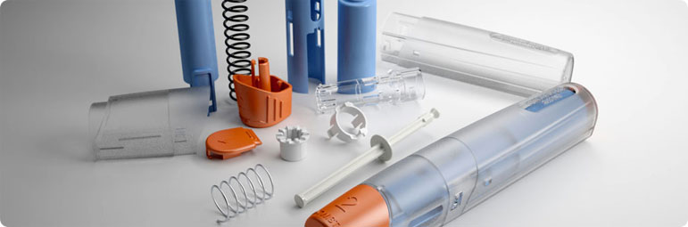

 Endüstriyel Tasarım Basit, güvenilir ve ucuz ürünler elde edilmesini sağlamak üzere tasarım aşamasındaki hataların üretim ortamına aktarılmamasını engellemek için tasarım yapılırken üretim koşulları ve yetenekleri dikkate alınmalıdır. Bu çalışmada, iş parçalarının üretiminde ve sonrasında sorunsuz işlev için, ürünün olabildiğince doğru tasarlanmasına yönelik temel kurallar açıklanmıştır. İmalat için tasarım, ürünün tasarımında imalat süreçlerinin kullanımını maksimize eden sistematik bir süreç olarak tanımlanabilir. Kısaca ürünün tasarım aşamasında, üretim aşamalarının da dikkate alınması olarak tanımlanabilir. Geleneksel tasarım/üretim sürecinde tasarımcılar kendilerine verilen görevin sadece; ürünün performansı, güvenirliği ve estetik görünüm kazandırılmasından ibaret olduğunu ve tasarlanan ürünü üretmenin de üretim mühendislerinin görevleri olduğunu düşünmektedirler. Bu düşünce ile tasarlanan ürünlerin üretim aşamasında hatalar ortaya çıkabilmektedir. Bu hataların üretim aşamasında ortaya çıkmasının önemli nedenlerinden biri tasarımcının, üretim faaliyetleriyle ilgili yeterli bilgiye sahip olmamasıdır. Bu nedenle, birçok firma tasarımcılarına üretim tecrübesi kazandırmaya çalışmaktadır. İmalat için Tasarım (DFM) 'ın amacı; düşük maliyetli, daha basit ve güvenilir ürünler elde edilmesini sağlamaktır. Bir ürünün tasarım-üretim sürecine DFM uygulanmasıyla başlangıçta arzu edilen tasarımla nihai ürün arasında farklılıklar çıkabilecektir (Şekil 1). Mümkün olduğunca talaşlı imalatı zorlaştıracak veya olanaksız hale getirecek tasarımlardan kaçınmak bu felsefenin önemli yapıtaşıdır. Yine ucuz ürün elde etmenin önemli aşamalarından biri, üzerinde çalışılan makine üzerindeki parça sayısını mümkün olduğunca azaltmak ve geride kalan bileşenleri optimize etmektir. 1.Geliştirilmiş malzeme, takım ve prosesler kullanmak Maksimum yarar sağlamak için DFM tasarım sürecine mümkün olduğunca erken uygulanmalıdır. Daha ucuz ürün kavramı içerisinde o ürünün işletme maliyetleri ve bakım masrafları da yer almaktadır. Üretim için tasarım konusu; bir insanın kitap veya eğitmenden öğrenmesinden çok tecrübe edinip özümsemesi gereken bir konudur. Bazı mühendislere göre talaşlı imalat yararsız ve gereksiz bir prosestir ve tasarımlarda işleme gerektirmeyen, her zaman ve her yerden temin edilebilecek standart parçaların kullanılması daha akılcıdır. DFM ile ilgili olarak tartışılan konular şu şekilde sıralanabilir; I-Standardizasyon, II-ürün için malzeme seçimi; III-ham malzemenin şekli, IV-talaşlı imalat sonrasında parçanın yüzey hassasiyeti, V-işlenme şekli , VI-yaklaşık maliyetler. |